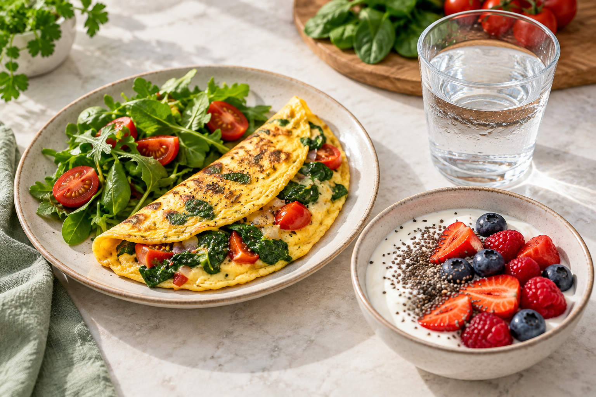

Conversor rápido
mg/dL ↔ mmol/L
Digite em qualquer campo para converter automaticamente.
⇄
Organize refeições, registre suas medições e aprenda a montar escolhas equilibradas — com ferramentas práticas para usar todos os dias.

Registre medições, visualize tendências e leve informações mais organizadas para conversar com sua equipe de saúde.
Digite em qualquer campo para converter automaticamente.
As metas são individualizadas. Gestação, idade, medicamentos e outras condições podem exigir valores diferentes.
| Data | Momento | Resultado | Observação | |
|---|---|---|---|---|
| Nenhuma medição registrada. | ||||
O método do prato ajuda a equilibrar grupos alimentares sem depender de contas complicadas. As porções exatas devem respeitar sua orientação individual.
Use como inspiração e faça trocas equivalentes conforme suas preferências, alergias e orientação profissional.
Combinações simples, com ingredientes acessíveis e espaço para adaptar temperos e preferências.

Combine uma fonte de proteína, fibras e uma porção de carboidrato planejada. Isso cria uma refeição mais completa e evita depender apenas de produtos açucarados.
Ingredientes: 2 ovos, ½ xícara de espinafre, 2 colheres de ricota, tomate, ervas e fio de azeite.
Preparo: bata os ovos, misture os ingredientes e cozinhe em frigideira antiaderente até firmar. Sirva com folhas.
Ingredientes: peito de frango, limão, alho, páprica, abobrinha, cenoura e brócolis.
Preparo: tempere, distribua em assadeira e asse até dourar. Divida em porções para a semana.
Ingredientes: lentilha cozida, cebola-roxa, tomate, pepino, folhas, limão e azeite.
Preparo: misture a lentilha ainda morna aos vegetais e finalize com limão, azeite e ervas.
Ingredientes: abóbora, frango desfiado, cebola, alho, couve e temperos naturais.
Preparo: cozinhe a abóbora, bata parte do caldo e volte à panela com o frango e a couve.
Ingredientes: iogurte natural sem açúcar, chia, canela, morangos e castanhas.
Preparo: monte em camadas e consuma na hora. Ajuste a fruta e a quantidade ao seu plano.
Ingredientes: berinjelas, carne moída magra ou lentilha, tomate, cebola, ervas e queijo opcional.
Preparo: asse as metades, retire parte da polpa, misture ao recheio refogado e leve ao forno novamente.
Marque o que já colocou no carrinho. A seleção fica salva neste aparelho.
Conhecimento prático para interpretar rótulos, montar refeições e observar padrões.
Tipo, quantidade, combinação e contexto importam. Associar fibras e proteínas pode tornar a refeição mais completa.
Confira a porção, carboidratos totais, fibras, açúcares adicionados e lista de ingredientes — não apenas frases da embalagem.
Registre horário, refeição, movimento, sono e medicação. Um valor isolado conta menos que uma tendência bem documentada.
Mantenha opções simples em casa e siga a orientação recebida para reconhecer e tratar hipoglicemia.
Não existe uma regra única para todos. O planejamento deve considerar quantidade, qualidade, distribuição ao longo do dia, medicamentos e preferências. Faça mudanças com sua equipe.
Sim. Prefira trocas dentro de grupos semelhantes e preserve a estrutura da refeição. Alergias, doença renal, gestação ou outras condições exigem orientação individual.
Não. Ele organiza registros e mostra tendências. Somente sua equipe pode interpretar metas pessoais, diagnosticar ou ajustar tratamento.
Siga o plano de ação combinado com sua equipe. Se houver sintomas importantes, piora rápida ou dúvida sobre urgência, procure atendimento de saúde.
O Regenera Vita é um material educativo. Ele não diagnostica, não calcula insulina, não substitui consulta e não orienta mudanças em medicamentos. Não altere doses, horários ou tratamento sem falar com um profissional habilitado.
Se você usa insulina ou medicamentos que podem causar hipoglicemia, combine previamente como ajustar alimentação e atividade física. Em situações urgentes ou com sintomas intensos, procure atendimento imediatamente.